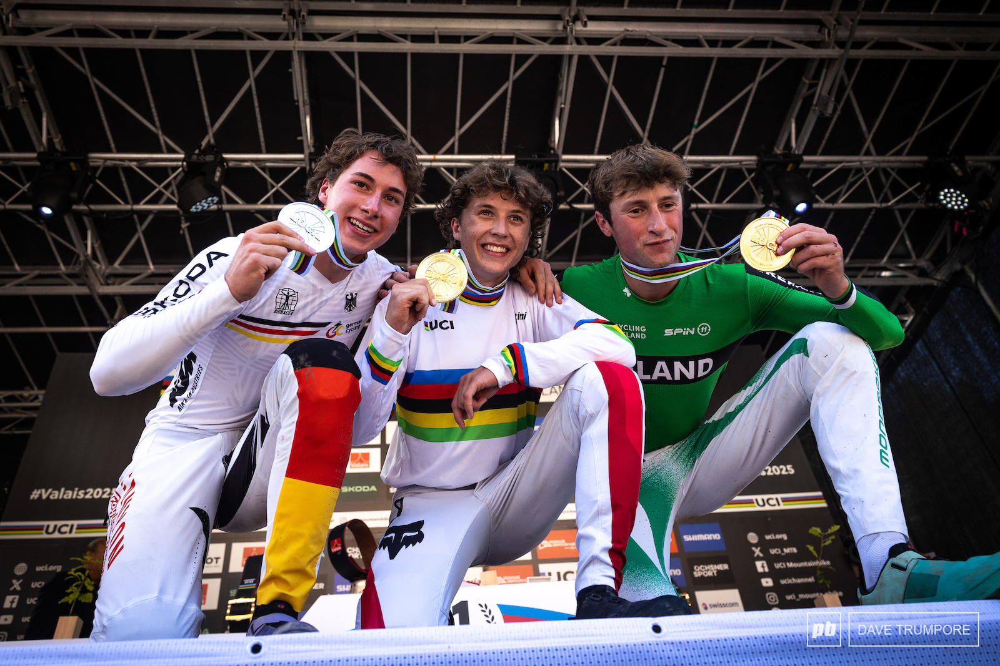

The season so far
The 2026 WHOOP UCI Downhill World Cup has already produced exciting racing across several world-class venues. Riders have battled steep, rocky and technical courses while fighting for valuable World Cup points.
Unlike the World Cup, which rewards consistency across an entire season, the UCI Downhill World Championships is a single race where riders compete for the famous rainbow jersey. Winning the World Championships means carrying the title of World Champion for the following year. This year World Championships will be held in Val Di Sole, Italy. The battle for the stripes is shaping up to be one of the best yet, with a stacked circuit of riders within milliseconds of each other every race.
| Year | Men | Women |
|---|---|---|
| 2025 | Jackson Goldstone 🇨🇦 | Valentina Höll 🇦🇹 |
| 2024 | Loris Vergier 🇫🇷 | Valentina Höll 🇦🇹 |
| 2023 | Charlie Hatton 🇬🇧 | Valentina Höll 🇦🇹 |
| 2022 | Loïc Bruni 🇫🇷 | Myriam Nicole 🇫🇷 |
| 2021 | Loïc Bruni 🇫🇷 | Myriam Nicole 🇫🇷 |
| 2020 | No Championships (COVID-19) | |
